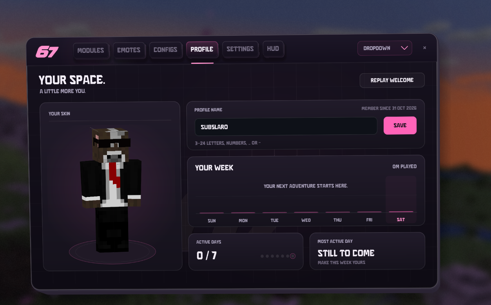
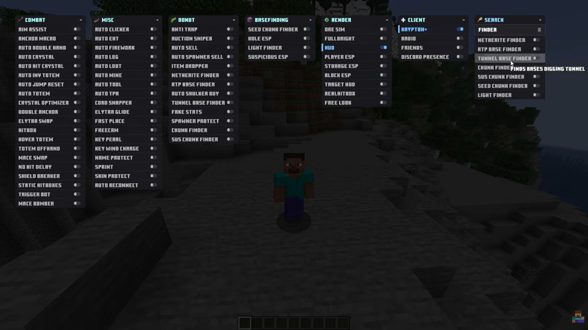
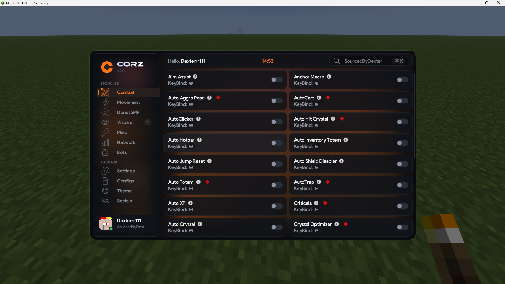
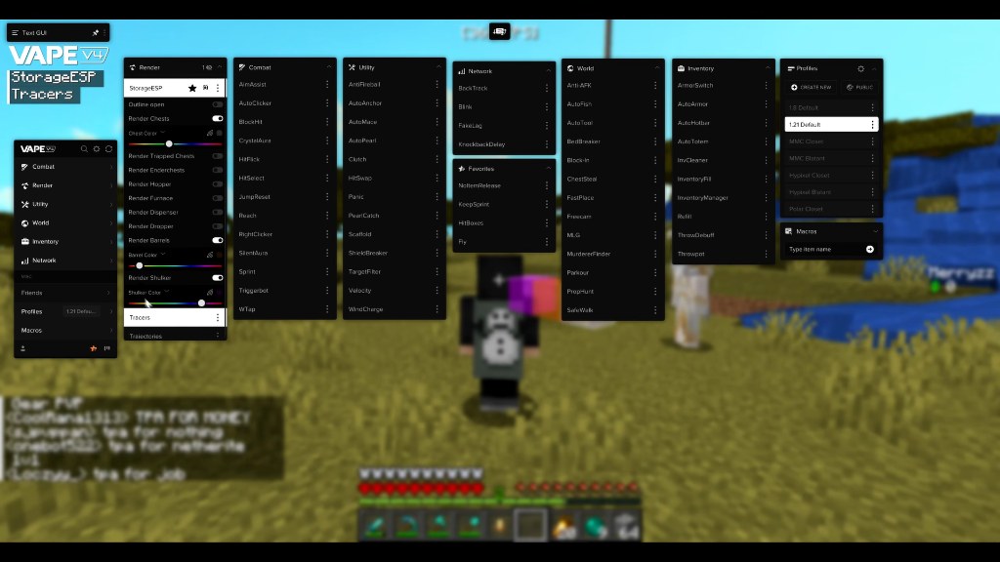
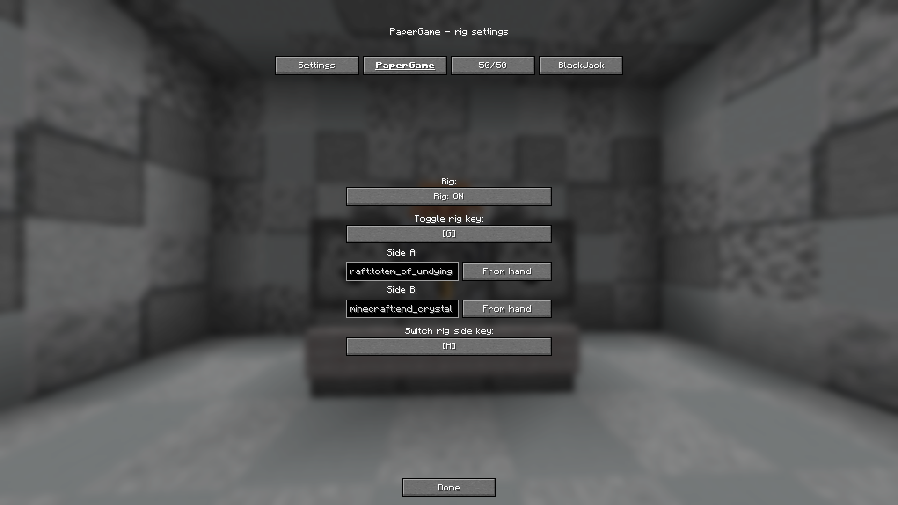
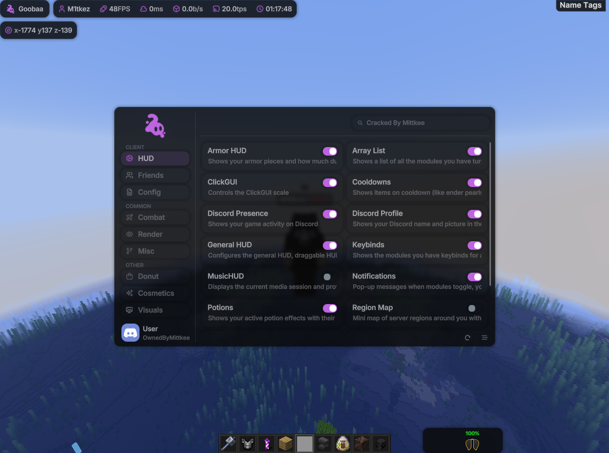
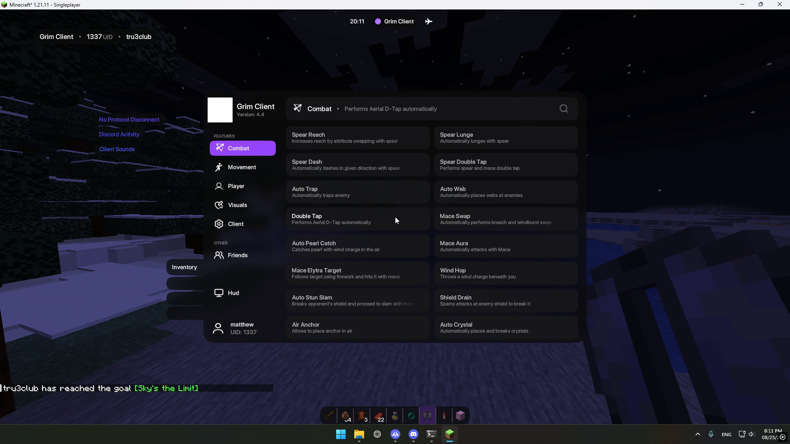
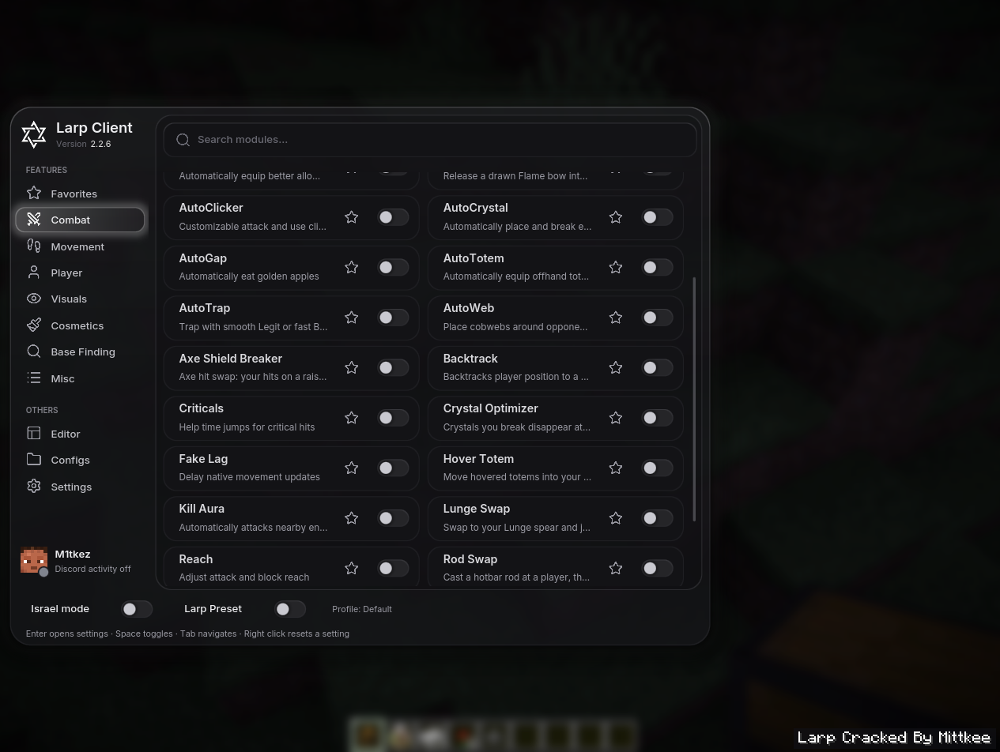
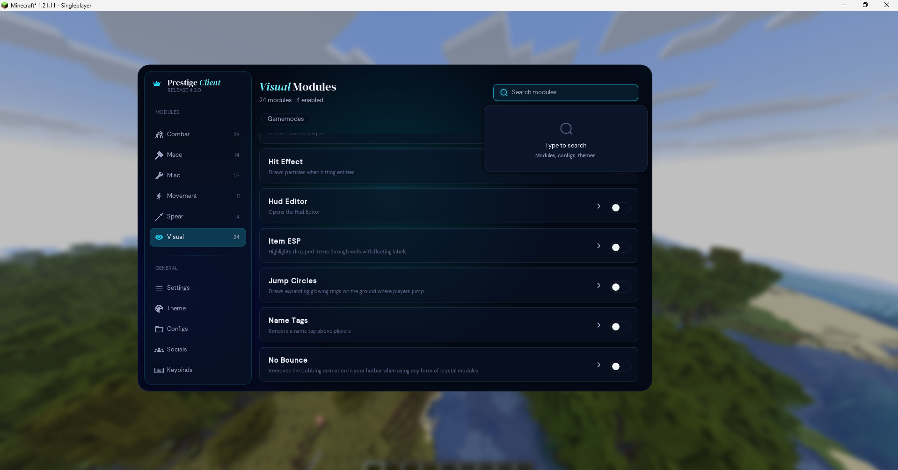

Free and cracked DonutSMP clients
Compare the full client listings available in this collection:
Compare free DonutSMP clients, cracked clients and Fabric utility mods for Minecraft 1.21.x and the current 26.x releases through 26.3—including Corz, 67, Gooba, Grim, Larp, Prestige, Krypton and more.
Combat clients, base-finding tools, economy utilities and stealth helpers—collected in one clean library.

01UNDETECTED67 Client Cracked is a free-download listing for 67Client, a DonutSMP-focused Fabric client with 52 combat, render, visual, miscellaneous and client modules. The official 67Client site lists RegionMap, StaffList, Chunk Finder, configurable HUD and saved keybinds for Minecraft 1.21.11; ClientStash also indexes 1.21.x and 26.x searches through 26.3.

02UNDETECTEDAuto AH Sniper is a DonutSMP auction-house and economy automation listing for Minecraft 1.21.x and 26.x through 26.3 on Fabric. Its listed functions include target-price rules, automated purchases, relisting controls and trading macros.

03UNDETECTEDCorz Client Cracked is a free-download listing for the Corz Minecraft client, a DonutSMP-focused Fabric client with building, mining, scouting, base-finding and PvP utilities. ClientStash lists Corz Client for Minecraft 1.21.x and 26.x through 26.3; confirm the exact build before installing.

04UNDETECTEDDonutSMP Base Finder is a storage and chunk-hunting utility listed for Minecraft 1.21.x and 26.x through 26.3 on Fabric. Its listed tools include chest, shulker and barrel overlays, chunk-boundary tracking, Freecam, waypoints and tracers.

05UNDETECTEDGambling Rig is a DonutSMP dispenser-outcome utility listed for Minecraft 1.21.x and 26.x through 26.3 on Fabric. Its available modes include Paper Game, 50/50 and Blackjack workflows.
 06UNDETECTED
06UNDETECTEDGlazed is a Meteor Client add-on for DonutSMP, listed for Minecraft 1.21.x and 26.x through 26.3. Its listed modules include auction-house sniping, coordinate tools, tunnel and base finding, combat macros and optional OpSec integration.

07UNDETECTEDGoobaa Client, also searched as Gooba Client, is a DonutSMP-focused Fabric client with performance, custom HUD, visual, configuration and utility modules. This free or cracked Gooba Client listing covers Minecraft 1.21.x and 26.x through 26.3; use the build that matches your game version.

08UNDETECTEDGrim Client Cracked is a free-download listing for the modern Grim Minecraft client. Grim's public changelog describes combat and movement modules, Scaffold, Aim Assist, Auto Totem, profiles, waypoints, pings and configurable keybinds, with modern Minecraft support including 26.2; ClientStash also indexes 1.21.x through 26.3 searches.
Krypton Client Cracked is a DonutSMP utility-client listing for Minecraft 1.21.x and 26.x through 26.3 on Fabric. Its listed tools cover combat macros, auction-house automation, storage and base finding, radar overlays and performance settings.

10UNDETECTEDLarp Client Cracked is a free-download listing for Larp Client, a Fabric utility client with Legit and Cheat builds covering visual, HUD, movement, combat and player tools. The official project lists Minecraft 1.21.11, 26.2 and 26.3 builds; ClientStash groups them under 1.21.x and 26.x compatibility.
11UNDETECTEDMeteor Client is a combat, render and automation client listed for DonutSMP on Minecraft 1.21.x and 26.x through 26.3. Listed modules include Crystal Aura, Auto-Totem, StorageESP, Tracers and configurable automation; this listing also requires the OpSec mod.
OpSec is a client-side privacy and anti-fingerprinting utility listed for DonutSMP on Minecraft 1.21.x and 26.x through 26.3. Its listed functions include blocking mod-list queries and sanitizing translation lookups for setups that use Meteor, Glazed or other Fabric mods.

13UNDETECTEDPrestige Client Cracked is a free-download listing for Prestige Client, a modern Minecraft ghost and PvP client offered in Fabric and injectable forms. Public project information lists crystal, sword, mace and DonutSMP tools such as AutoCrystal, Aim Assist, ESP and Base Finder across Minecraft 1.21 and 26.x releases.
Vape V4 Client Cracked is a DonutSMP ghost-client listing for Minecraft 1.21.x and 26.x through 26.3 on Fabric. Listed modules include StorageESP, Xray, Freecam, Tracers, AutoClicker, AimAssist, SilentAura, AutoTotem, AutoMace, AutoAnchor and Velocity controls.
A DonutSMP client is a Minecraft Java mod or client-side utility built for DonutSMP gameplay. These tools can add combat modules, base-finding overlays, auction-house automation, privacy features or other utilities. This directory covers Fabric builds across Minecraft 1.21.x and the year-based 26.x releases through 26.3.
Compare the full client listings available in this collection:
Browse focused DonutSMP mods for common utility categories:
Research-backed pages for popular DonutSMP and modern PvP client searches:
Compatibility note: client availability and supported versions can change. Check the version and dependency list on the individual detail page before downloading or installing a .jar.
Every public listing has been manually installed and tested on DonutSMP with Minecraft 1.21.11 and 26.2. Compatibility listings may include additional builds, but these two versions are the current verified test matrix.
Verification record updated: November 15, 2026
The listed loader, dependencies and client build are installed in a clean mods setup and checked for a successful launch.
The menu, documented keybinds and representative modules are opened and exercised in game on both verified versions.
The client is connected to DonutSMP and observed for anti-cheat detection while the relevant modules or bypass are active.
Undetectable means no detection occurred during the owner test. True bypass means the claimed bypass function worked during that test.
Test results describe the verified builds at the time of review. DonutSMP or its anti-cheat can change after testing, so always check the listing status and server rules before use.
Use one client at a time and confirm the requirements shown on its detail page.
Visit FabricMCDownload the official Fabric installer, choose the matching Minecraft 1.21.x or 26.x release and create a Fabric profile.
Place the correct Fabric API .jar in your Minecraft mods folder.
Download a client from its detail page and move its .jar into the same folder.
Start the Fabric profile. Most tools open with Right Shift; check the listing for exceptions.
Start here if something is unclear before installing.
The directory covers Minecraft 1.21.x and the newer year-based 26.x releases through 26.3. Each listing shows its available Fabric builds and requirements.
Install Fabric Loader for the matching Minecraft version, add Fabric API when required, place the client .jar in the Minecraft mods folder, then launch the Fabric profile.
Yes. Glazed is an add-on for Meteor Client. Its listing also recommends Fabric Loader, Fabric API and the OpSec mod; check the Glazed detail page for the current dependency list.
Press Win + R, enter %appdata%\.minecraft, then open or create the mods folder.
Confirm the Minecraft version, Fabric profile and required dependencies all match. Remove conflicting clients and retry with only the tool you are testing.